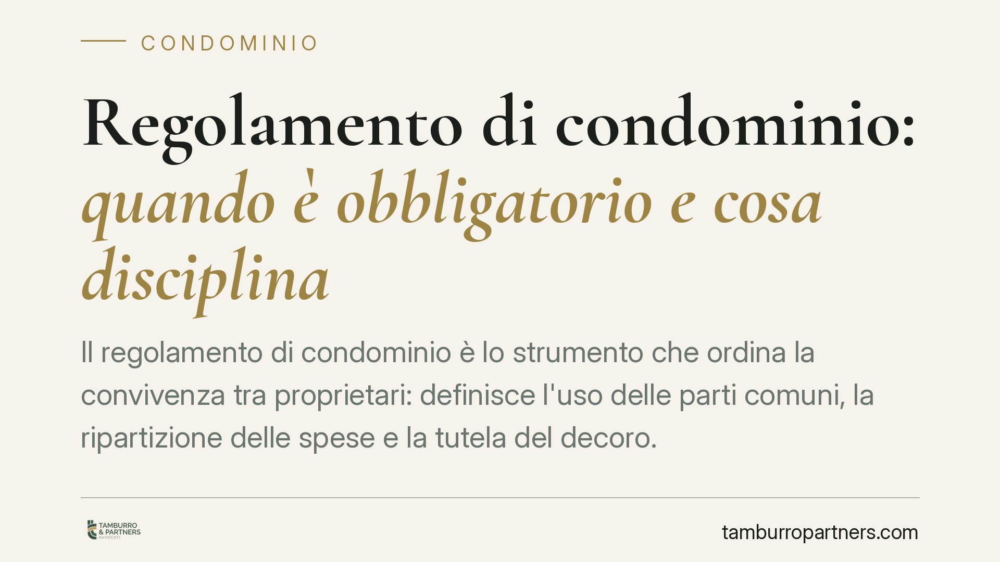
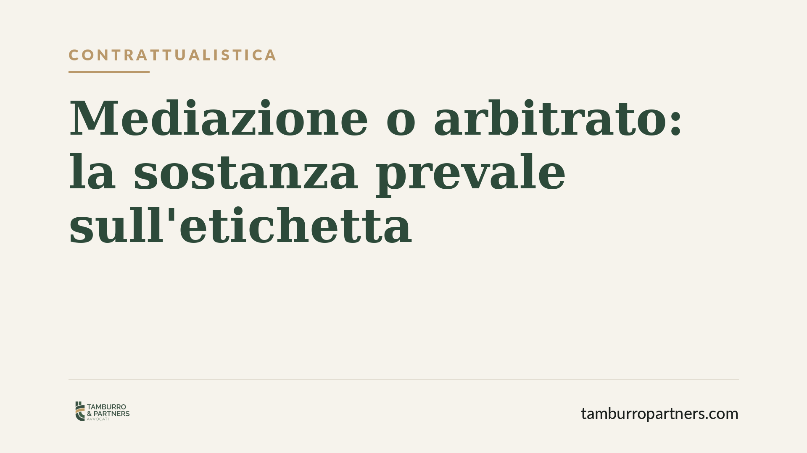
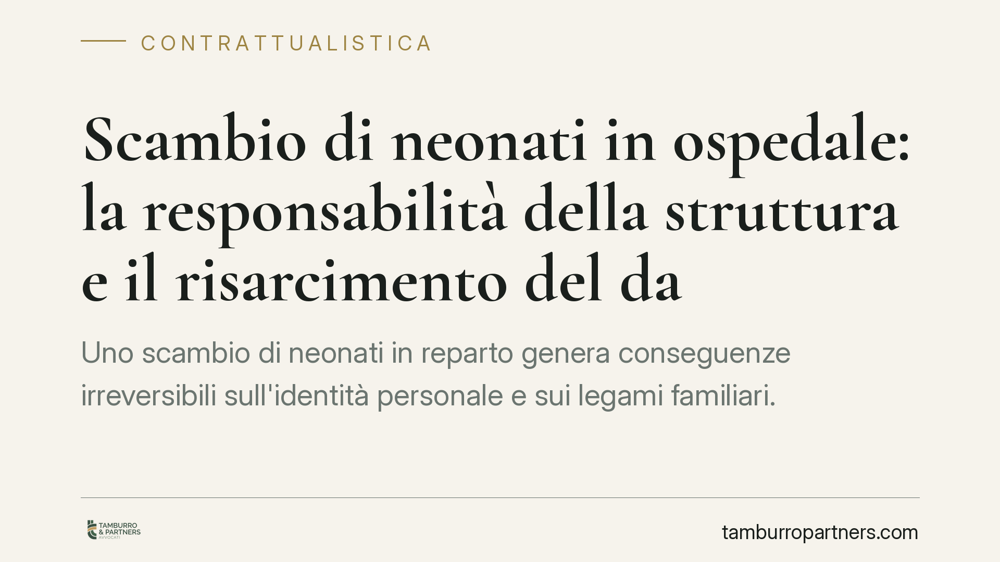
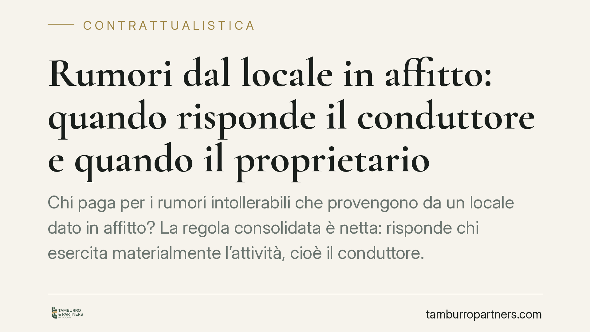

Rendiconto redatto ma assemblea non convocata: quando l'amministratore rischia la revoca
L'amministratore ha predisposto il rendiconto ma non convoca l'assemblea per approvarlo. È motivo di revoca giudiziale? La giurisprudenza di merito richiede un'analisi in concreto:…
Quando è nulla la locazione transitoria
La locazione transitoria serve a coprire esigenze temporanee, ma non è uno strumento libero: se manca il presupposto o si abusa dello schema, il contratto è nullo nella parte trans…

Provvigione del mediatore immobiliare: quando matura il diritto
La provvigione del mediatore immobiliare è tra le fonti di contenzioso più frequenti nella compravendita. Il diritto sorge quando l'affare è concluso per effetto dell'intervento de…

Tabelle millesimali annullate: le spese già pagate restano dovute
L'annullamento delle tabelle millesimali non travolge i pagamenti già effettuati. Secondo la Cassazione, il condòmino paga in quanto proprietario, non per effetto della tabella. Ch…

Alloggio del portiere ceduto gratis: quando spetta l'indennizzo al condomino
Il condomino che mette a disposizione, senza corrispettivo, un proprio locale come alloggio del portiere consente al condominio di risparmiare sui costi del servizio. Da qui il dir…

Rifiutare il pagamento delle spese condominiali: quando è legittimo
L'obbligo di contribuire alle spese condominiali nasce dalla proprietà dell'immobile, non dalla volontà del singolo. Esistono però situazioni in cui il rifiuto del pagamento è legi…

Regolamento di condominio: quando è obbligatorio e cosa disciplina
Il regolamento di condominio è lo strumento che ordina la convivenza tra proprietari: definisce l'uso delle parti comuni, la ripartizione delle spese e la tutela del decoro. La leg…
Casa al portiere: quando spetta l'indennizzo al condomino proprietario
Chi mette a disposizione del condominio un proprio immobile come alloggio del portiere può avere diritto a un ristoro economico. La giurisprudenza riconosce un indennizzo parametra…
TFR al Fondo di Tesoreria INPS: scadenze e sanzioni per le aziende
Il versamento del TFR al Fondo di Tesoreria INPS torna al centro dell'attenzione: scadenze rigorose, meccanismo di rivalutazione e sanzioni civili per chi ritarda o omette. Il tema…

Mediazione o arbitrato: la sostanza prevale sull'etichetta
Nella pratica contrattuale il nome scelto per lo strumento di risoluzione delle controversie non basta a determinarne gli effetti. Conta la funzione reale della clausola: facilitat…
8, 5 e 2 per mille senza dichiarazione dei redditi: la guida
Non presentare la dichiarazione dei redditi non impedisce di destinare l'8, il 5 e il 2 per mille dell'IRPEF. Chi è esonerato può comunque compiere la scelta con un'apposita scheda…
Onere della prova: la sostanza dei fatti prevale sulle presunzioni
Una tendenza attraversa la giurisprudenza recente in materia di lavoro, contratti e condominio: il giudice non applica automatismi, ma verifica i fatti concreti. Chi agisce o si di…
Spese della chiostrina condominiale: chi paga anche senza accesso
La chiostrina è quel piccolo cavedio interno che serve ad areare e illuminare gli ambienti ciechi dell'edificio. La Cassazione ha chiarito che i suoi muri perimetrali sono beni com…
Mutuo e determinabilità del TAN: quando il tasso è nullo
Un contratto di mutuo deve consentire di calcolare con certezza gli interessi dovuti. Se mancano gli elementi che rendono il tasso ricostruibile — TAN, spread, base di rilevazione …

Scambio di neonati in ospedale: la responsabilità della struttura e il risarcimento del danno
Uno scambio di neonati in reparto genera conseguenze irreversibili sull'identità personale e sui legami familiari. Sul piano civile la struttura sanitaria risponde anche in assenza…
Il preposto alla sicurezza: compiti, poteri e responsabilità dopo la Legge 215/2021
Il preposto è la figura che, sul campo, vigila sul rispetto delle regole di sicurezza. La Legge 215/2021 ne ha rafforzato il ruolo: oggi non deve solo sorvegliare, ma intervenire e…

Rumori dal locale in affitto: quando risponde il conduttore e quando il proprietario
Chi paga per i rumori intollerabili che provengono da un locale dato in affitto? La regola consolidata è netta: risponde chi esercita materialmente l'attività, cioè il conduttore. …

Vendita immobiliare senza agibilità: il risarcimento del danno all'acquirente
Vendere un immobile privo del certificato di agibilità espone il venditore a conseguenze economiche rilevanti. La giurisprudenza di legittimità considera l'agibilità un requisito c…

Reperibilità sanitaria oltre i limiti: quando può nascere il risarcimento
Il superamento sistematico dei limiti sui turni di reperibilità del personale sanitario torna al centro del dibattito giurisprudenziale. Secondo un orientamento della Corte di Cass…

Streaming e diritto di recesso: cosa cambia per abbonamenti e piattaforme
Gli abbonamenti a servizi di streaming pongono un tema ricorrente: si può recedere dopo l'attivazione? La disciplina europea e il Codice del consumo tutelano il consumatore con un …

Licenziamento per recidiva: senza una nuova infrazione la sanzione è illegittima
Con l'ordinanza 14077/2026 la Cassazione ribadisce un principio essenziale: il licenziamento per recidiva presuppone una nuova infrazione disciplinare, non basta sommare precedenti…

Streaming e diritto di recesso: il quadro europeo per gli abbonamenti a distanza
Il dibattito sui servizi di streaming ripropone una domanda pratica: quando si applica il diritto di recesso di 14 giorni previsto per i contratti a distanza? La qualificazione del…

Servitù su beni comuni: serve l'unanimità, non la maggioranza
Il Tribunale di Firenze ha stabilito che l'assemblea condominiale non può riconoscere una servitù su beni comuni con delibera a maggioranza. Serve l'unanimità dei condomini, perché…

Riserva di proprietà del costruttore su lastrico solare e facciata: quando è valida
Un chiarimento del Consiglio Nazionale del Notariato torna su una questione ricorrente: quando il costruttore vende i primi appartamenti, può trattenere per sé beni comuni come il …

Ascensore in condominio senza disabili: è possibile?
Un ascensore o una piattaforma elevatrice possono essere installati in condominio anche quando nessun residente ha una disabilità certificata. La giurisprudenza recente valorizza i…

Licenziamento dopo il periodo di prova: quando è illegittimo
Terminato con esito positivo il periodo di prova, il rapporto di lavoro si consolida: da quel momento il datore non può recedere liberamente, ma solo per giusta causa o giustificat…

Pannelli fotovoltaici sul balcone: assemblea, decoro e detrazioni
Il condomino può installare pannelli fotovoltaici sul proprio balcone senza chiedere il via libera dell'assemblea, purché rispetti alcuni limiti precisi. Il tema tocca il diritto d…

Bilancio condominiale approvato senza amministratore in carica: è valido?
Il mandato annuale dell'amministratore è scaduto, ma l'assemblea approva comunque il rendiconto. La delibera è nulla? Non necessariamente. La scadenza formale dell'incarico non azz…

Affitto commerciale: le spese condominiali tra conduttore e proprietario
Nelle locazioni commerciali la ripartizione delle spese condominiali è fonte ricorrente di contenzioso. Il principio è netto: il conduttore paga ciò che è legato all'uso dell'immob…

Inclusione scolastica e riforma della disabilità: il corso Anffas e le novità del D.lgs. 62/2024
Anffas Nazionale ha aperto fino al 20 luglio le iscrizioni a un corso gratuito sull'inclusione scolastica, rivolto a personale scolastico e operatori del Terzo Settore. L'iniziativ…